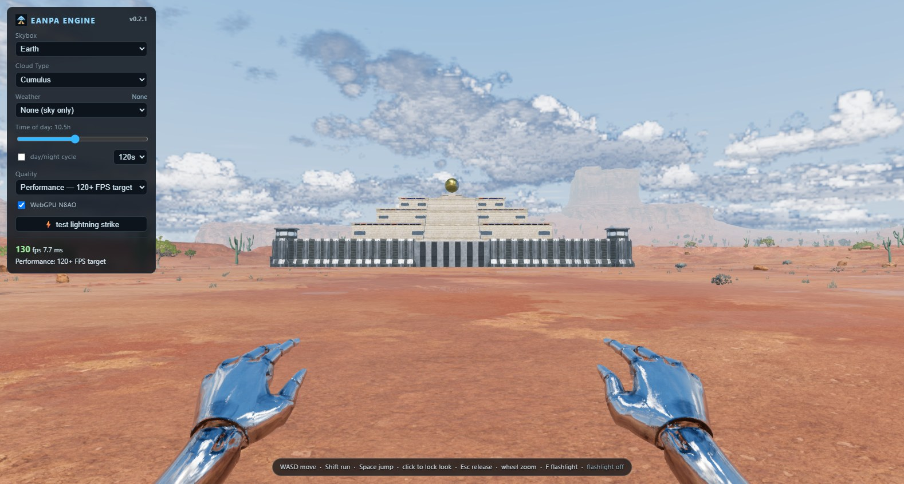

The same three quality settings. Performance periodically captures the volumetric clouds; Balanced and High keep the live cloud pass. Shadows, rain, puddles, lightning and local reflections remain active.

The fixture uses ordinary roofs, slopes and chrome surfaces to check the reusable effects. Capture metadata is saved next to the images. These are representative views, not exhaustive flight testing.
Nine seconds, 30 FPS recording, normal simulation speed. Cloud wind motion continues between completed captures. Four keyframes were separately inspected.
A 2048 × 1024 cloud panorama refreshes every three seconds, sooner for significant changes. Captures render in 32 bands and publish only when complete, with a half-second crossfade. Camera rotation stays immediate. Wind and camera translation approximately reproject the image; current lighting and eclipse visibility remain live.
The tradeoff is softer fine detail, approximate cloud parallax and less continuous shape evolution. Fast cloud fly-throughs suit Balanced or High better. The three HDR cloud targets add 48 MiB. Cloud shadows use current density, so they can differ slightly from the displayed approximation between captures.
Separate 600-frame WebGPU timestamp captures on the RTX 5090 Laptop GPU, Earth rain at 1578 × 846. They measure GPU pass work, excluding queue idle time. The live capture included one sky environment refresh; the cached capture did not. That difference contributed under 0.002 ms per frame.
Each 12-second run moves the camera and includes a real environment refresh. Constrained runs apply 4× browser CPU throttling and synthetic GPU contention calibrated to 8 ms; its actual cost varies and is recorded in the JSON. This is resource stress, not emulation of a named low-end device.
Background CPU activity affected every window. The original Balanced constrained run also had heavy CPU activity during warmup; both it and the repeat are shown. These FPS samples do not establish a reliable percentage gain or tier ranking. The constrained Performance improvement was modest.
| Setting | Resources | FPS | p95 frame | Raw capture |
|---|
Demo integration · Real-time transition · Panorama GPU contract · Shadow continuity · Rain surfaces · Reflection motion
Full-demo quality changes still have a slow shader warmup: the switch into Balanced spent 175.7 seconds preparing its scene rendering. It completed without errors, but this cloud display change does not resolve that compilation delay. Weather transitions above used their already-warmed shaders.